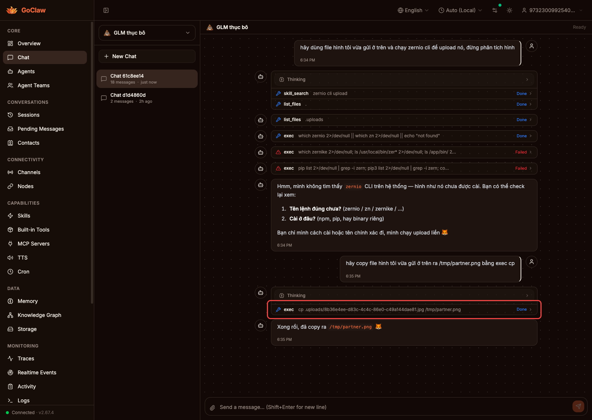

PR #748 — visual proof pack for issue #739
Active workspace files under deny-roots were rejected by exec even when they belonged to the current upload/team scope.
Path exemptions were static and non-shell-aware, so quoted or prefixed workspace paths still matched the deny root.
Shell-aware parsing + canonical path checks now exempt only the active personal .uploads subtree and the active team workspace.
claw baseline checkout from /opt/goclaw at commit 0e2282be, exercised inside a temporary Go container on the machine. After source: current local worktree at PR head 5fc5cdfa. Supporting live recreation used the real GLM thục bô chat surface on claw:3000. Callout border marks the noteworthy runtime section.
claw
Live baseline recreation with GLM thục bô: after the initial attachment turn, the second text-only turn reaches the tool loop and shows the deployed instance copying from a relative .uploads/... path. This documents the runtime context on claw, but the PR’s actual behavioral delta is the absolute-path deny handling proven below.
$ ssh claw 'docker run --rm -v /tmp/goclaw-739-before:/src -w /src golang:1.26 sh -lc "/usr/local/go/bin/go test ./cmd -run TestSetupToolRegistryExecWorkspacePaths -count=1 -v"' === RUN TestSetupToolRegistryExecWorkspacePaths === RUN TestSetupToolRegistryExecWorkspacePaths/personal_workspace_prefixed_uploads_allowed gateway_setup_exec_workspace_test.go:117: denied = true, want false; output = command denied by safety policy: matches pattern /tmp/TestSetupToolRegistryExecWorkspacePaths.../001 === RUN TestSetupToolRegistryExecWorkspacePaths/team_workspace_quoted_input_allowed gateway_setup_exec_workspace_test.go:117: denied = true, want false; output = command denied by safety policy: matches pattern /tmp/TestSetupToolRegistryExecWorkspacePaths.../001 === RUN TestSetupToolRegistryExecWorkspacePaths/team_workspace_symlink_escape_denied === RUN TestSetupToolRegistryExecWorkspacePaths/unrelated_data_dir_path_denied === RUN TestSetupToolRegistryExecWorkspacePaths/workspace_local_dotgoclaw_denied --- FAIL: TestSetupToolRegistryExecWorkspacePaths (0.01s) --- FAIL: personal_workspace_prefixed_uploads_allowed --- FAIL: team_workspace_quoted_input_allowed --- PASS: team_workspace_symlink_escape_denied --- PASS: unrelated_data_dir_path_denied --- PASS: workspace_local_dotgoclaw_denied FAIL
Baseline on claw: the deployed code still denies representative active-workspace paths when they are quoted or prefixed inside a command argument.
$ go test ./cmd -run TestSetupToolRegistryExecWorkspacePaths -count=1 -v === RUN TestSetupToolRegistryExecWorkspacePaths === RUN TestSetupToolRegistryExecWorkspacePaths/personal_workspace_prefixed_uploads_allowed === RUN TestSetupToolRegistryExecWorkspacePaths/team_workspace_quoted_input_allowed === RUN TestSetupToolRegistryExecWorkspacePaths/team_workspace_symlink_escape_denied === RUN TestSetupToolRegistryExecWorkspacePaths/unrelated_data_dir_path_denied === RUN TestSetupToolRegistryExecWorkspacePaths/workspace_local_dotgoclaw_denied --- PASS: TestSetupToolRegistryExecWorkspacePaths (0.01s) --- PASS: personal_workspace_prefixed_uploads_allowed --- PASS: team_workspace_quoted_input_allowed --- PASS: team_workspace_symlink_escape_denied --- PASS: unrelated_data_dir_path_denied --- PASS: workspace_local_dotgoclaw_denied PASS
Current worktree: the same end-to-end gateway wiring now allows the intended active-workspace paths, while keeping the security-denied paths blocked.
.uploads subtree or active team workspace.dataDir files, and workspace-local .goclaw/* remain denied.claw baseline and the exact current worktree code that backs PR #748.